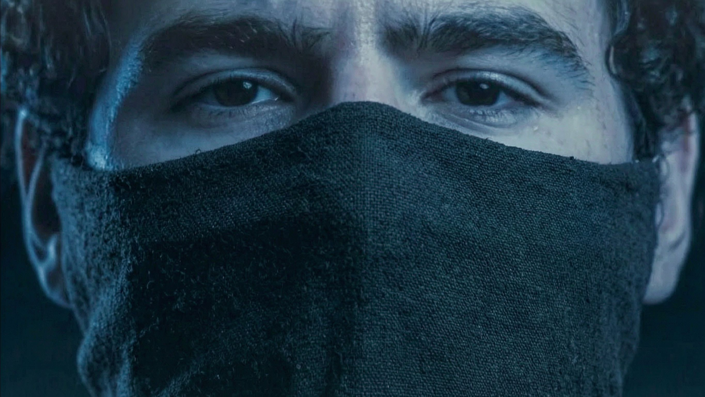

Nicht nur bekannt. Gefolgt.

Abdul B. war nicht unsichtbar.
Er war im Netz.
Während Behörden den bekannten Islamisten überwachten, baute er dort nach einer Recherche der WELT eine islamistische Gefolgschaft auf. Radikale Inhalte. Öffentliche Reichweite. Menschen, die ihm folgten.
Nach dem Anschlag auf den Berliner CSD, bei dem eine Frau starb und 29 Menschen verletzt wurden, kam aus diesem Umfeld nicht nur Trauer.
Es kam Beifall.
„Möge Allah ihn für alles belohnen“, zitierte die WELT einen Nutzer. Der Satz steht für etwas, das in der deutschen Debatte fast nie vorkommt: Nicht nur der Attentäter selbst ist das Problem. Sondern auch das Milieu, das seine Tat nachträglich zum Glaubensdienst erklärt.
Das ist kein Urteil über Muslime. Es ist ein Befund über Islamisten und ihre Unterstützer.
Und es wirft eine weitere Frage auf.
Abdul B. war als Gefährder bekannt. Er war verurteilt. Er stand unter Beobachtung. Seine angeordnete Deradikalisierung hatte nicht einmal begonnen.
Aber er konnte gleichzeitig online auftreten, ein Publikum aufbauen und radikale Ideen verbreiten.
Was genau wurde da überwacht?
Nicht jeder widerwärtige Kommentar im Netz ist automatisch strafbar. Doch wer einen Anschlag öffentlich billigt, kann sich nach § 140 StGB strafbar machen. Die Regel soll verhindern, dass aus Mord und Terror eine Einladung zur Nachahmung wird.
Die Ermittler müssen deshalb nicht nur fragen, wie Abdul B. an diesem Abend zum CSD gelangen konnte.
Sie müssen auch fragen: Wer hat ihn im Netz aufgebaut? Wer hat ihn gefeiert? Und wer prüft diese Leute jetzt?
Ein Terrorist handelt allein.
Eine Ideologie fast nie. Das Muster ist älter als dieser Anschlag.
Quelle: WELT-Recherche vom 28. Juli 2026